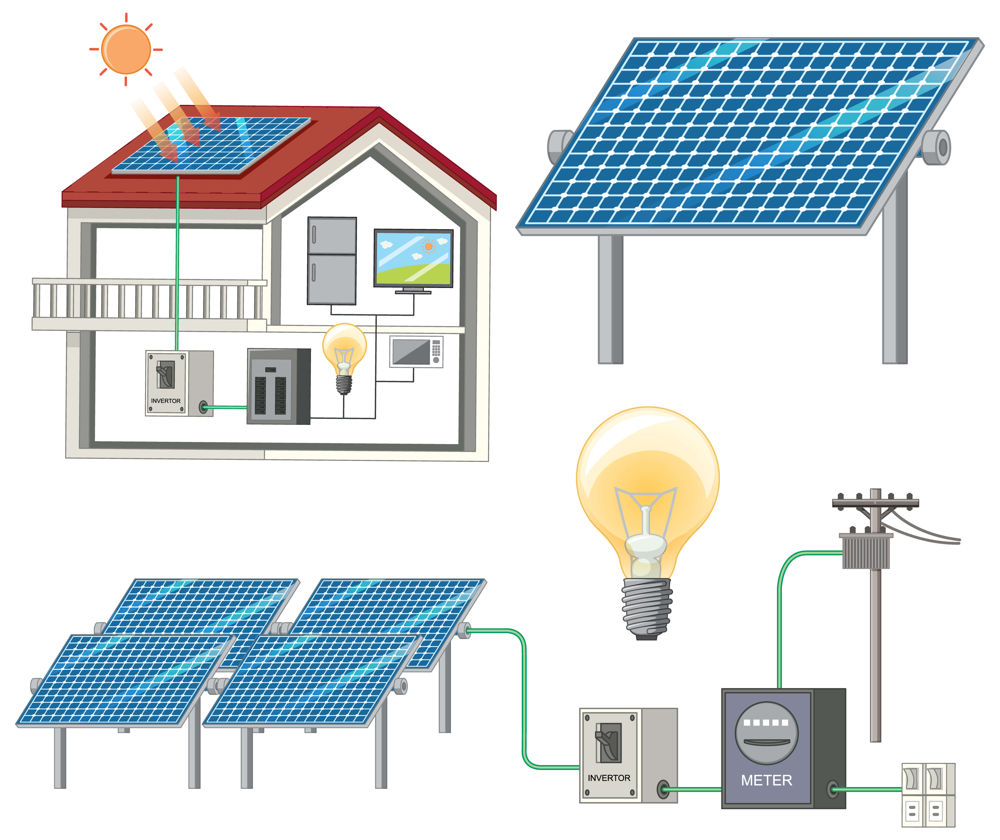

¿Cómo funcionan los paneles solares?
Descubre cómo la energía solar se transforma en electricidad para tu hogar o empresa.
Leer ArtículoAprende sobre energía solar, sostenibilidad y cómo reducir tu huella de carbono en Costa Rica.

Descubre cómo la energía solar se transforma en electricidad para tu hogar o empresa.
Leer ArtículoAprovecha el clima tropical para reducir costos y contribuir al medio ambiente.
Leer ArtículoAprende cómo mantener tu sistema funcionando de forma eficiente por años.
Leer Artículo